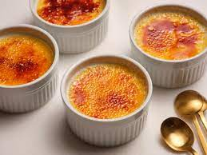

Sipolu Zupa

SVAIGĀKĀS RECEPTES
| |
Sipolu Zupa |
 | Krēms Brulē |
| |
Nav citu rakstu | |
Nav citu rakstu |
Par ko ir šis blogs? Šis blogs ir par aktuālajām ēdieniem,
kā arī par pasaules valstu virtuvēm. Tu arī vari uzzināt faktus par ēdieniem!
Ja vēlies lasīt kādu no blogiem, tad
Spied Šeit!